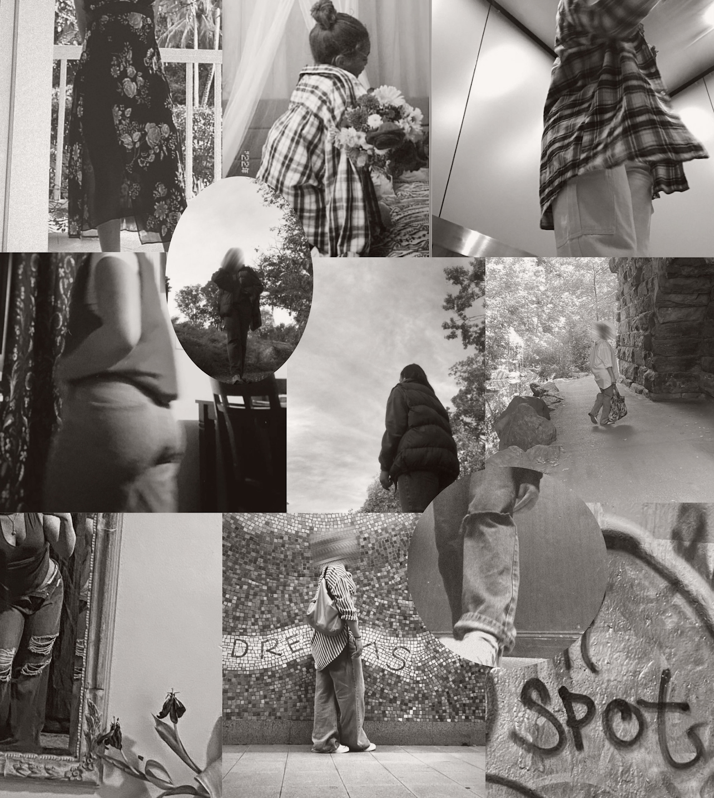
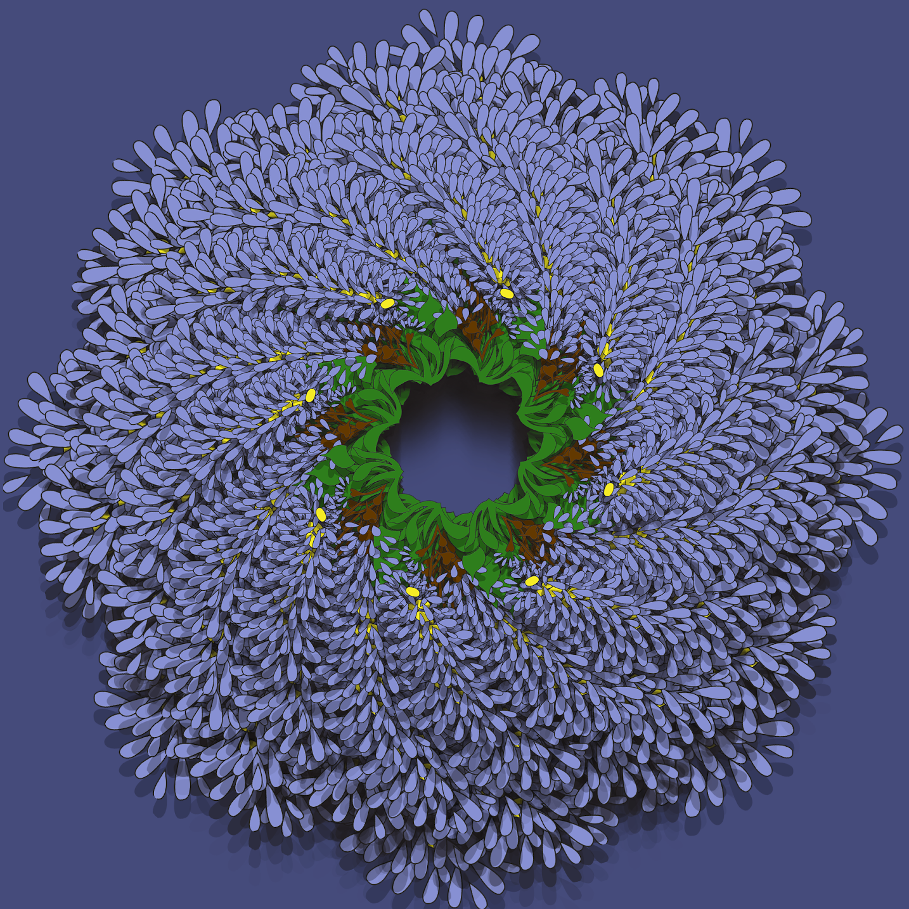

Visual Design Class
Artifact #1
I made this collage with actual photos of me. I started by looking for photos I felt that actually had some symbolism to me. I used my own pictures but I used a filter over them. I included pictures of myself because I really didn’t find any online that were calling my name. I think my collage matched my aesthetic because It’s me in the photos but because it shows how I carry myself. I always try to make sure life is the way I wanted it to be. It gives me security and calmness.My collage also show’s How I try to make life a bit better even with the bad moments. My 6 letter were - - Is really me on my mind
Artifact #2
My whole idea was to make myself a pixel character. Short hair,brown eyes, wearing a red shirt. I used the paint tool,and The pencil tool in my project. My character looks like it will belong in animal crossing. Their purpose in the game would be to present a character someone can build and interact with on the game.
Artifact #3
We made this project with Photoshop. We all choose an outline of something. I chose a flower. After we chose this object we had to choose some colors and paint the object with the paint bucket. The colors I used were Purple,Yellow,and Green. After we used The transform button then rotated every time for the duplicated object. In Conclusion my shape became like a Wreath. The purple being the leafs of the wreath, The green and yellow being the start of the Wreath.
Artifact #4

My subject was Kali Uchis. I decided to give her a wing eyeliner. I proceeded to change her pupils to a light pink. I decided to use a brownish pink on her lips.I gave her white freckles to go with the late 80s eyeliner look. I did all these with the paintbrush tool. I chose kali uchis as my subject because she has simple facial features to work with. Kali uchis is a singer. She is well known for her many songs with Tyler the Creator and her own song called Telepatia.
Artifact #5

My social justice topic is police brutality. This topic is important to me because the people that are supposed to be “protecting” us are just hurting us and putting us in more danger. Before I keep speaking about my topic when I say “us” I’m talking about an individual group of people which are African Americans. Some important information viewers should know is that cops are mostly killing not only black African Americans but they are taking away the lives of young black men. While doing my research and looking for photos for my collage, all I noticed was young males getting killed and getting mistreated by the authorities. My photos are assembled as a collage. The young people in the back are people that got killed by cops. The banner that says black lives matter is transparent to not only show the people on the back but to remind people when they see their faces, they remember that police brutality is real and that we as a community should come together and stop it.